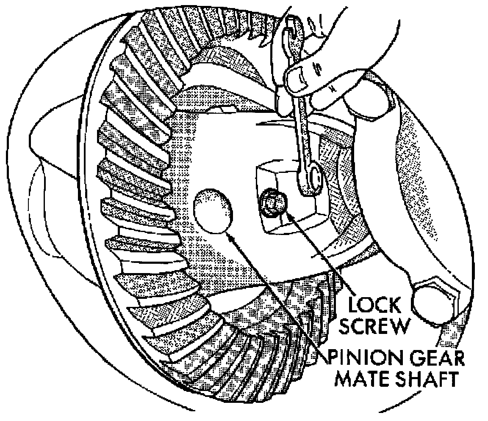
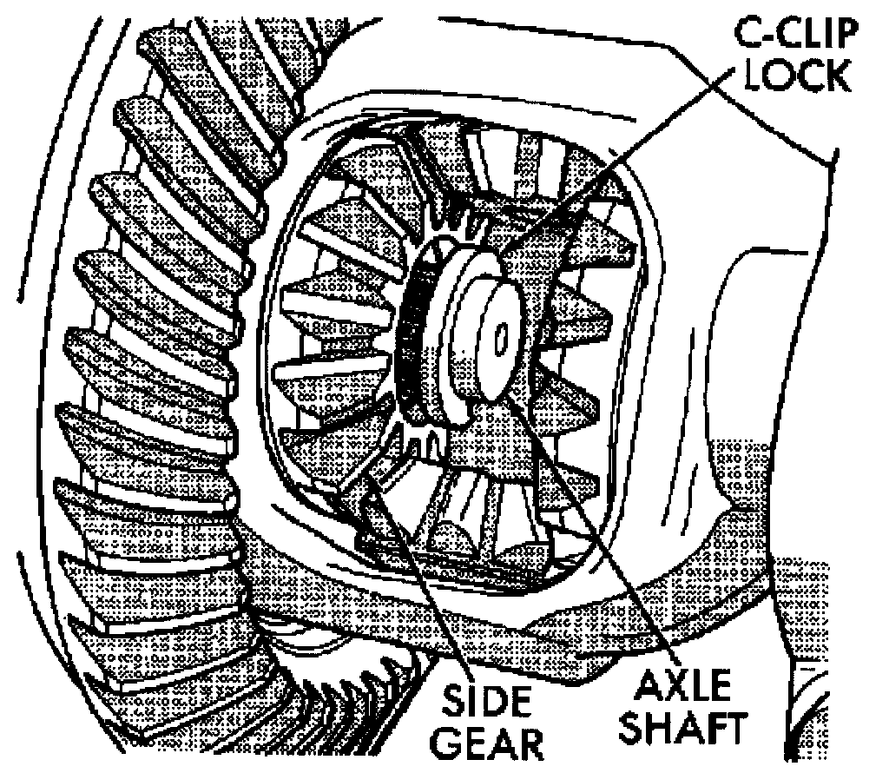

Rear Axle - 216RBA
Removal
1. Raise and support vehicle. Ensure that the transmission is in neutral.
2. Remove wheel and tire assembly.
3. Remove brake caliper and rotor.
4. Clean all foreign material from housing cover area.
5. Loosen housing cover bolts. Drain lubricant from the housing and axle shaft tubes. Remove housing cover.

6. Rotate differential case so that pinion mater gear shaft lock screw is accessible. Remove lock screw and pinion mate gear shaft from differential case.

7. Push axle shaft inward and remove axle shaft C - clip lock from the axle shaft.
8. Remove axle shaft. Use care to prevent damage to axle shaft bearing and seal, which will remain in axle shaft tube. Also, exercise care not to damage the wheel speed sensor on vehicles equipped with ABS brakes.
9. Inspect axle shaft seal for leakage or damage.
10. Inspect roller bearing contact surface on axle shaft for signs of brinelling, galling and pitting. If any of these conditions exist, the axle shaft and/or bearing and seal must be replaced.
Installation
1. Lubricate bearing bore and seal lip with gear lubricant. Insert axle shaft through seal, bearing, and engage it into side gear splines.
Note: Use care to prevent shaft splines from damaging axle shaft seal lip. Also, exercise care not damage the wheel speed sensor on vehicles equipped with ABS brakes.
2. Insert C - clip lock in end of axle shaft. Push axle shaft outward to seat C - clip lock in side gear.
3. Insert pinion mate shaft into differential case and through thrust washers and pinion gears.
4. Align hole in shaft with hole in the differential case and install lock screw with Loctite on the threads. Tighten lock screw to 19 Nm ( 14 ft lbs ).
5. Install cover and add fluid.
6. Install brake caliper and rotor.
7. Install wheel and tire.
8. Lower vehicle.